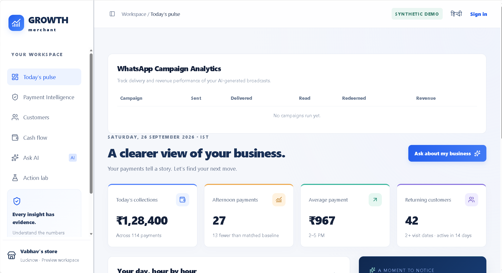
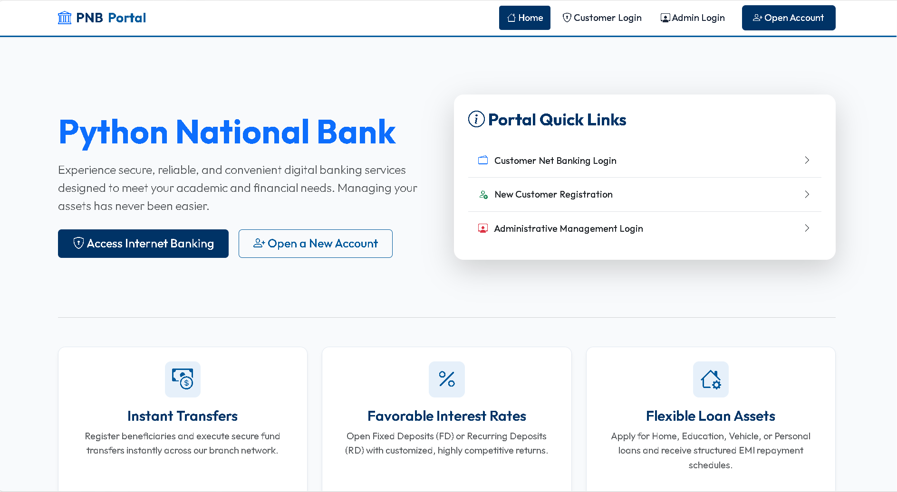
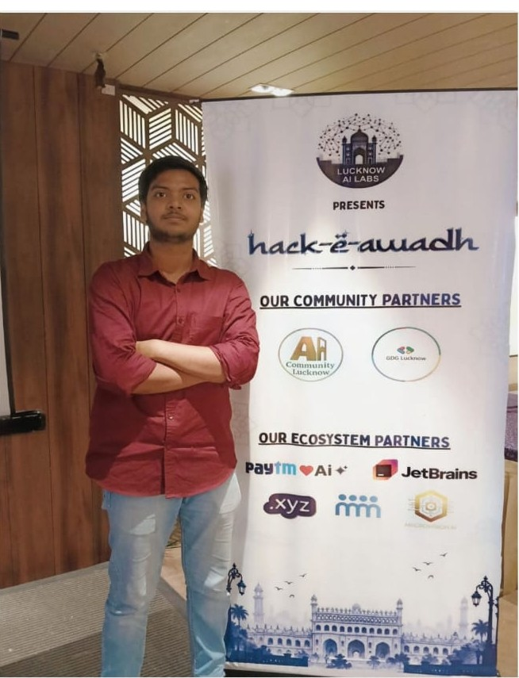

01 / BUILD</>
Web development
From a considered interface to the logic behind it. Exploring responsive, approachable experiences for the web.
DEVELOPER. THINKER. ALWAYS A STUDENT.
Turning curiosity into code.
Building thoughtful digital experiences.
A CURIOUS MIND. A PRACTICAL APPROACH.
I’m Vaibhav, a third-year B.Tech student at Shri Ramswaroop Memorial College of Engineering & Management, Lucknow. I’m exploring the space where software engineering, web development, and artificial intelligence meet.
I learn by building — connecting the fundamentals of computer science with projects that solve real problems.
More about my journey ↗From a considered interface to the logic behind it. Exploring responsive, approachable experiences for the web.
Experimenting with machine learning and local language models to make information more useful and accessible.
Building a foundation in algorithms, databases, and object-oriented thinking. Understanding how the pieces fit together.
A selection of projects from my learning journey.
Practical problems, explored through code.
A hackathon project exploring how clear analytics and an AI assistant can help merchants understand their business. Includes Hindi and English responses and a local language model.

An AI-powered Bank Account Management System project, bringing together Flask, MySQL, role-based access, and an exploration of fraud detection.

Building under pressure. Learning through experience.
Lucknow · Solo participant · Merchant Growth AI

Out of 600+ registrations, I qualified among the top 20 finalists as a solo participant at Hack-e-Awadh 2026 in Lucknow.
Competing in the Open Track (PS-02 / Paytm), I focused on a challenge faced by local kiranas and street vendors: using everyday digital-payment data to grow their businesses and bring customers back during slow hours.
I designed and built Merchant Growth AI, an explainable platform that turns UPI transaction records into practical actions for small-business owners.
The prototype explores targeted discounts, seasonal offers, and small-ticket bundles to help shopkeepers bring customers back during quieter periods.
It connects payment consistency with rewards and measurable business perks for merchants and buyers.
Merchant Growth AI is designed as a digital growth partner, helping vendors market their shops, retain regular buyers, and identify opportunities to improve sales.
It compares equivalent time windows, such as footfall between 2–5 PM, before recommending actions, grounding marketing experiments in historical data.
Merchants can interact in Hindi or English without needing to navigate complex dashboards.
Although I did not win the hackathon, building an end-to-end full-stack prototype single-handedly under time pressure was a tremendous learning experience. The event included dedicated build intervals, guidance from mentor Anshul Saxena, and a judging round.
Thank you to Abhishek Sahu, Prashant Shukla sir, and the organizing team for creating a professional and encouraging hackathon. I look forward to continuing to build and refine this solution.
A space for my next hackathon, collaboration, or milestone. Updates will appear here as the journey continues.
Reserved for a future project experience, internship, or community contribution. Another story to share when it happens.
Scroll or swipe to explore · Read the experience or open the event photo
Third-year student at Shri Ramswaroop Memorial College of Engineering & Management. Developing a foundation in algorithms, databases, and software design.
Connecting Python, web development, and AI through hands-on projects — from banking systems to merchant analytics.
Have an idea, an opportunity, or something to build?
I’d love to hear about it.